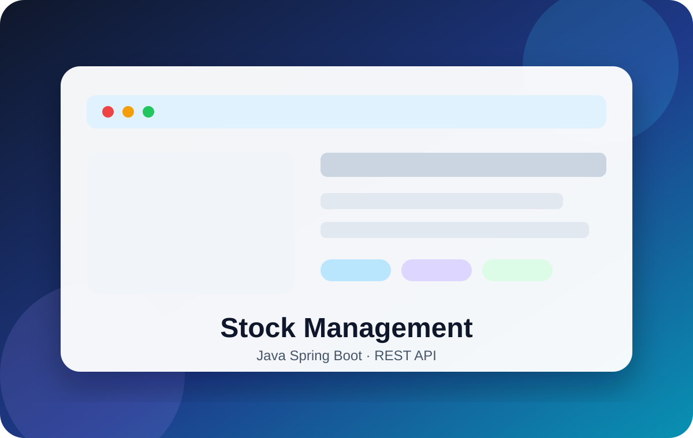
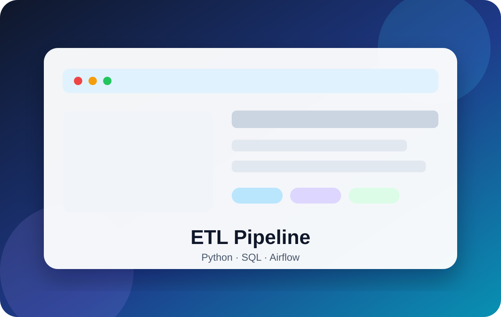
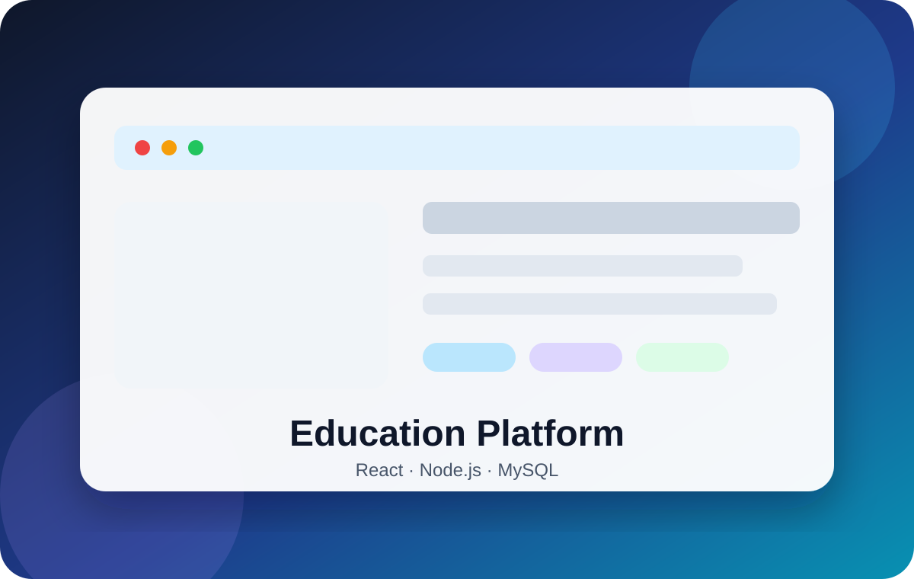
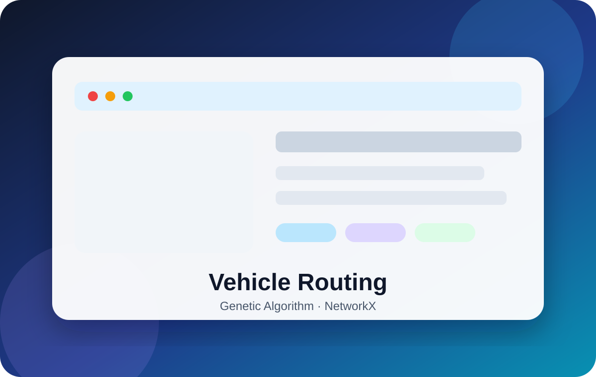
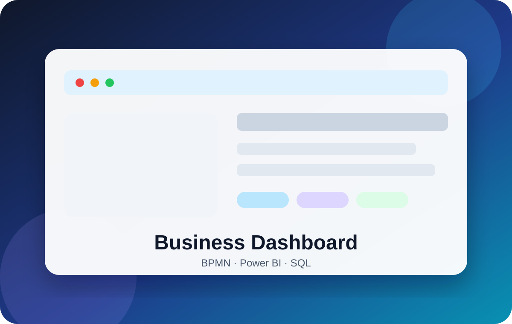

IT & IS Consulting
Audit, modeling, process digitalization, specifications and technical recommendations.
UMLBPMNMeriseJiraPhD computer engineer, lecturer-researcher and software engineer specialized in artificial intelligence, optimization, information systems, web development, data engineering and business applications.
I design and develop reliable digital solutions: web applications, Java APIs, data pipelines, decision dashboards and AI prototypes. My teaching and research experience helps me analyze requirements, structure solutions, document technical choices and support users.
Clear services for clients, recruiters and academic partners.
Audit, modeling, process digitalization, specifications and technical recommendations.
UMLBPMNMeriseJiraSecure REST APIs, business applications, 3-tier architecture and database integration.
JavaSpring BootJPAJWTETL pipelines, cleaning, SQL/Python transformations, data warehouse and dashboards.
PythonSQLAirflowPower BIClassification, prediction, anomaly detection, optimization and data analysis.
Scikit-learnPandasMLGAEach project is presented with goal, features, technologies and value. Screenshots are replaceable visuals to be updated with real screenshots once projects are finalized.

Business application to manage products, users, stock movements and alerts.

Pipeline for collecting, cleaning, transforming and loading academic data.
ML prototype to analyze medical data and support prediction tasks.

Platform to manage courses, users, teaching materials and student projects.

Metaheuristic modeling and solving of a routing problem.

Analysis, modeling and transformation of a manual process into a digital solution.
Teaching experience in algorithms, programming, databases, web development, Java, Python, Big Data, Linux, artificial intelligence, machine learning and information systems.
Machine learning, classification, prediction, anomaly detection and medical data.
NP-hard problems, VRP, TSP, Hamiltonian circuit, CSP, graphs and metaheuristics.
Multi-agent systems, superimposed graphs, security, heterogeneous data and decision support.
A New Improved Guided Genetic Algorithm for CSOP to Solve the Hamiltonian Circuit Problem in Superimposed Graphs.
Optimization and graph theory: Metaheuristics, constraint satisfaction, and machine learning.
Application of an improved genetic algorithm to Hamiltonian circuit problem — Procedia Computer Science.
Hybrid genetic algorithm for CSOP to find the lowest Hamiltonian circuit in a superimposed graph — ICAISC.
Available for freelance missions, IT consulting, Java/Web development, data engineering, AI projects, teaching, workshops and research collaborations.